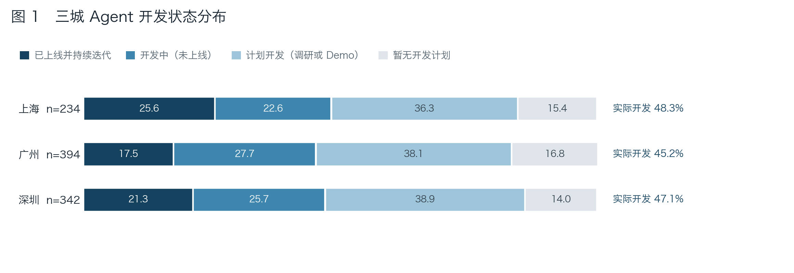
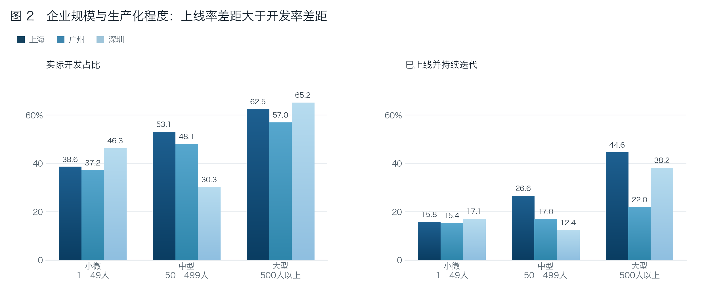
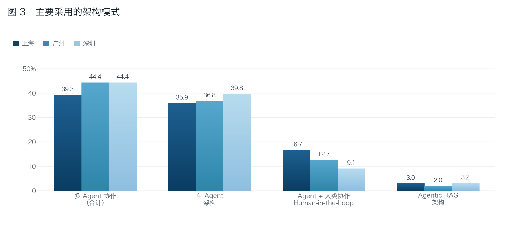
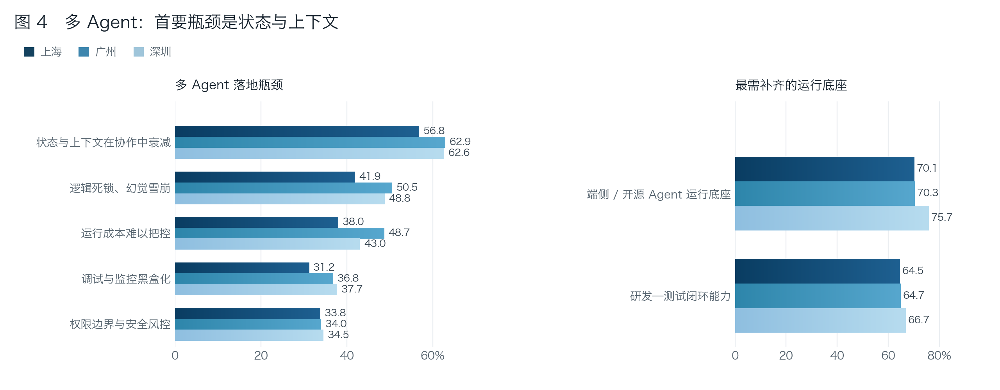
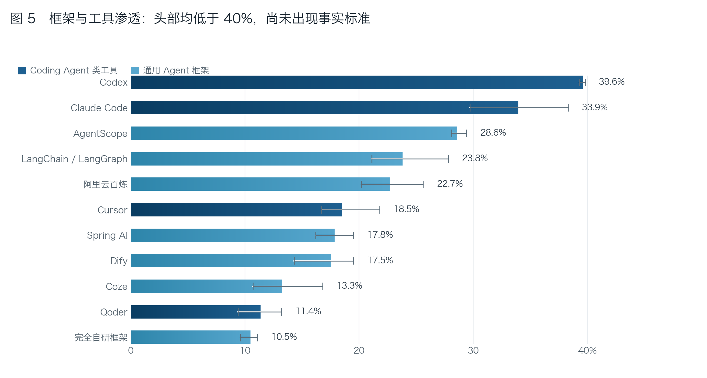
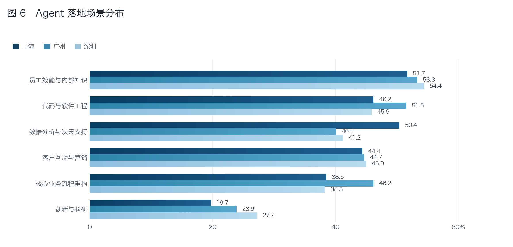
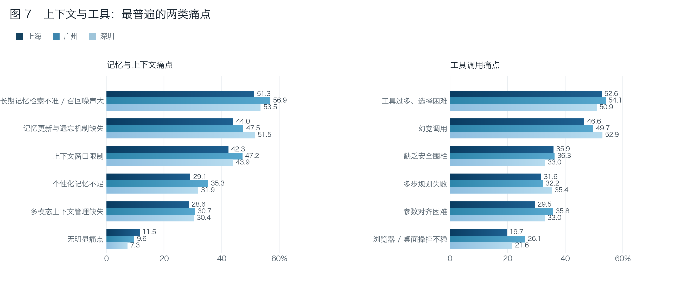
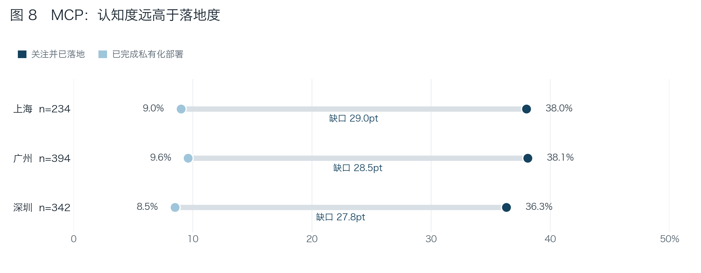
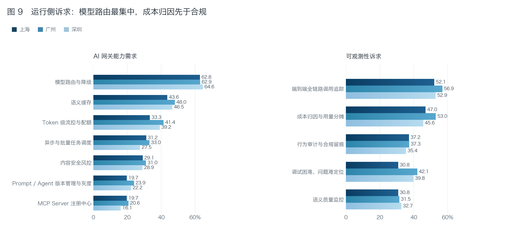
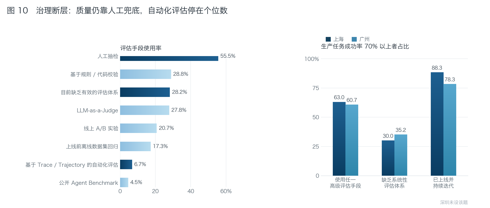

2026 Agent 开发者调研报告¶
今年，我们在北京、深圳、广州、上海、杭州等城市举办了多场线下开发者沙龙，旨在了解 Agent 在各行业的发展现状。此次开发者调研回收了有效问卷 1906 份，受访者以企业的技术决策者、架构师、一线工程师和产品经理为主。本节将呈现我们的调研详情，希望对从业者们提供一些参考。
一、核心发现：¶
1、Agent 投入已成共识，但生产化仍是少数派。
是否要做 Agent 已不再是议题，明确表示暂无开发计划的受访者从去年的22%降至 15%，正在调研和计划开发的从去年的47%降至25%，已开发完成或开发中的合计 46%，去年这一数据是36%，但真正部署到生产环节的只有 18%。
2、单 Agent、多 Agent、人在回路，是长期共存的三种选择，不是新旧替代。
以单 Agent 为主要架构的企业占 40%，开始引入多 Agent 为的企业有 42%，另有15% 的企业已讲Human in the Loop（关键步骤交由人确认）当作主要架构来设计。自主度是一个可调参数，混合形态会长期存在。
3、Agent 最先在写代码这件事上实现了规模化，但供应商呈现碎片化。
AI Coding 是被验证的商业市场，企业采购 Claude Code、Codex、Cursor、Qoder 等 Coding 工具的企业占 57%，使用通用 Agent 框架的占 78%，还有近四成企业同时在用编程 Agent 与通用 Agent 框架。市场尚未形成寡头格局，供应商呈现碎片化，可迁移的工程抽象比押注某个厂商更有价值。当然，随着办公 Agent 的普及，编程 Agent 和通用 Agent 的边界越加模糊。
4、信息管理、任务治理、行动优化是 Agent 构建后的难点。
一是上下文与记忆管理，90% 的企业有明确的需求；二是多模型的路由与成本治理，63% 的企业把它列为当前阶段最需要补齐的能力；三是评估与可观测，判断 Agent 好不好用，55% 的企业仍靠人工抽查，能基于运行轨迹自动评估的不足 8%。这三点也映射了本白皮书构建篇的第4章、第5章、第6章，我们会详细展开。
5、算力、模型、应用碎片化已是既定事实，需要统一的流量入口管理。
多模型路由与自动降级被 63% 的企业列为最需要的网关能力，是本次调研中比例最高的单项需求。不同任务匹配不同模型、主模型不可用时降级、按成本与延迟动态选择。这类需求无法在应用代码里逐个解决，需要一个统一的流量入口来承接。
6、评估能力是提升 Agent 生产可靠性的必经之路。
评估目标不明确、基建不成熟的后果，体现在任务成功率上。Agent 任务成功率达到 90% 以上的企业仅约一成，70% 以上约 55%，而 16% 的受访者根本没有量化过成功率。这部分企业实际上无法判断自己的 Agent 是否在正常工作。
二、Agent 开发进程与生产化水平¶
1. Agent 投入已成共识，但生产化仍是少数派¶
是否要做 Agent 已不再是议题，明确表示暂无开发计划的受访者从去年的22%降至 15%，正在调研和计划开发的从去年的47%降至25%，已开发完成或开发中的合计 46%，去年这一数据是36%，但真正部署到生产环节的只有 18%。

2. Agent 策略受阻的不是意愿，而是工程能力储备¶
上线率的差距普遍大于开发率的差距。上海的大型企业已上线率 45%，小微企业 16%；深圳则是 38% 和 17%。差异并不在是否愿意投入，而是是否具备持续演进 Agent 的工程能力，包括 Agent 的组织和协作、治理、优化和沉淀等。

我们在白皮书架构篇《第 1 章 AI 原生应用的新阶段》引入了智能体 L1—L4 成熟度的分级。 L1 是辅助生成，L2 是受控自动化，L3 Agentic Execution 仅在部分场景成立，L4 Managed & Optimizing 尚属少数。白皮书构建、运行、治理、调优，本质上都在回答如何从 L2 演进到 L3、L4。
三、Agent 架构的选型分布¶
1. 新旧形态是共存，不是替代¶
以单 Agent 为主要架构的企业占 40%，开始引入多 Agent 为的企业有 42%，自主度是一个可调参数，混合形态会长期存在。这份数据支持白皮书在第 1 章与第 12 章提出的判断：Chat/RAG、Workflow、Copilot、Agent 与 Managed Agentic Application 在同一家企业内部往往同时存在，选择取决于任务的确定性程度与容错空间，而非技术新旧。此外，15%的企业把"人在回路"（Human-in-the-Loop，HITL，指关键步骤必须由人确认后才继续执行）作为 Agent 落地生产环境的架构原则，而非仅当作附加的审批开关。

白皮书架构篇《第 1 章 AI 原生应用的新阶段》系统总结了当前阶段 Agent 的形态、特点和发展趋势。
2. 信息管理、任务治理、行动优化是 Agent 构建后的难点。¶
受访者反馈的最大痛点是状态与上下文在多 Agent 协作中衰减，占 60%。第二和第三大痛点分别是死锁雪崩与成本失控，本质也是调用链与状态缺乏约束的后果。被问到最希望补齐哪些能力时，两项诉求的比例更高：研发—测试闭环 65%、端侧与开源运行底座 73%。前者说明多 Agent 的验证成本已被感知为主要负担，后者说明企业对运行底座的自主可控有明确诉求。
图 4 多 Agent 的主要挑战与最期待补齐的能力

白皮书构建篇《第 4 章 任务：编排、长程推进与协作流转》、《第 5 章 信息：上下文、状态与可复用能力资产》、《第 6 章 行动：受控执行、验证反馈与交付准备》，并且运行篇中《第 8 章 Agent 状态存储与语义资产》，回应的都是这三大痛点。此外，端侧与开源底座的高诉求也解释了第 7、12 章讨论 Runtime、沙箱与部署拓扑的必要性。
四、优先落地场景与工具链渗透¶
1. 编码先行，但竞争激烈¶
AI Coding 是被验证的商业市场，企业采购 Claude Code、Codex、Cursor、Qoder 等 Coding 工具的企业占 57%，使用通用 Agent 框架的占 78%，还有近四成企业同时在用编程 Agent 与通用 Agent 框架。市场尚未形成寡头格局，供应商呈现碎片化，可迁移的工程抽象比押注某个厂商更有价值。当然，随着办公 Agent 的普及，编程 Agent 和通用 Agent 的边界越加模糊。

-
Coding 是目前唯一实现规模化落地的付费场景。原因不难理解：反馈信号明确（能否编译、测试是否通过）、环境边界清晰（代码仓库与工作区）、错误代价可控（可回滚）。这三项恰好是 Agent 稳定运行的前提条件。
-
还没有出现事实标准。前十位呈平缓下降而非陡峭长尾，多数企业仍在多框架并行试用。围绕单一框架构建企业内部标准的做法风险较高。
-
同时使用编程 Agent 和通用 Agent 的比例接近四成，说明能力正在互相渗透。从编程 Agent 沉淀出的工程范式，Skill 的组织方式、工作区隔离、工具调用的权限约束、上下文的分层加载，正在被迁移到企业的办公场景。
2. 优先落地容错空间大、能人工兜底的场景¶
在落地场景上，最广泛的是员工效能、代码工程、数据分析。将 Agent 引入企业核心业务流程的占比不到40%，比例明显略低。这一排序与第一章的上线率自洽：Agent 优先进入可人工兜底的场景，进入核心业务流程这些严肃场景，则需要更完整的治理配套。

白皮书构建篇以 Harness 作为核心抽象，把 Skill、Memory、Knowledge、Tool 作为可组合能力分别成章，是为了给出一套不绑定具体框架的构建范式。在选型尚未收敛的市场条件下，可迁移的抽象比选定框架更具实际价值。
五、上下文、工具与协议层的能力瓶颈¶
1. 上下文的问题不在窗口大小，而在写入、淘汰与检索策略¶
在记忆与上下文、工具调研存在哪些痛点的调研中，表示无明显痛点的仅不到 10%。排在前两位的是检索不准（54%）与记忆更新与遗忘机制缺失（48%），都不是靠扩大上下文窗口能解决的问题；窗口限制只排第三。工具侧结构类似，工具过多、选择困难占比（52%），幻觉调用（50%），总的来看，工具的组织方式与描述质量，比工具数量更决定调用成功率。
白皮书运行篇《第 8 章 Agent 状态存储与语义资产》将讨论持久化、向量索引与检索，为记忆落地提供底座；治理篇《第 15 章 AI 资产的发现与管理》讨论如何对工具描述、版本与按需发现的组织方式。

2. MCP 差的是企业级配套，不是协议理解¶
已经关注或已经落地 MCP 的企业合计 37%，而真正完成企业内私有部署的只有 9%。要在企业内真正跑起 MCP，需要私有注册中心、统一身份与鉴权、版本与灰度管理、审计留痕，以及与网关的集成，这些都不是协议规范本身提供的。同时有 28% 的受访者明确提出 MCP 服务管理与注册中心的需求，这一比例与已落地比例接近，说明需求正从认知转向工程实施。

白皮书治理篇《第 15 章 AI 资产的发现与管理》给出 Agentic Resource Registry，把 Prompt、Skill、MCP Server、Agent 纳入统一注册、版本与按需发现。《第 9 章 AI 网关与统一流量治理》中将阐述 MCP 管控的落地实践。
六、运行底座与网关层的能力诉求¶
1. 多模型并用已是既定事实，需要一个统一入口承接¶
多模型路由与自动降级被 63% 的企业列为最需要的网关能力，是本次调研中比例最高的单项需求。不同任务匹配不同模型、主模型不可用时降级、按成本与延迟动态选择。这类需求无法在应用代码里逐个解决，需要一个统一的流量入口来承接。
2. 成本归因比合规更早成为观测重点¶
在可观测能力的诉求里，成本归因（50%）排位仅次于全链路追踪，高于审计合规与语义质量监控。多数企业 Token 用量还不算大，但已经在为成本的可见性与可分摊做准备。这更接近一种预防性诉求，在规模上来之前先建立成本的观测与约束能力，而不是等账单失控后再补。

白皮书运行篇将 《Agent 运行时与沙箱》、《Agent 异步任务与自动化流程》、《Agent 分布式通信与消息治理》、《Agent 状态存储与语义资产》、《AI 网关与统一流量治理》分别成章，并组成了运行篇。其中把 AI 网关 从流量入口扩展为统一治理入口，集中承接工具注册与检索、参数校验、模型路由、熔断重试、链路追踪与成本标签，正是对这组需求的直接回应。
七、调优是智能体落地的重难点，但缺少高效的执行框架¶
1. 越来越多团队开始做 Agent 的评估，但普遍停留在人工抽查的阶段¶
被问到用什么方法评估 Agent 的效果时，人工抽查以 55% 稳居第一，而基于运行轨迹（Trajectory）自动评估的只有 6%，用公开 Benchmark 的只有不到 5%；另有 28% 还没有建立系统性的评估体系。把 LLM-as-Judge（用模型给模型的输出打分）、A/B 实验、离线数据集回归这三类常见评估手段里，用上其中任一种的企业为 34%。
评估目标不明确、基建不成熟的后果，体现在任务成功率上。Agent 任务成功率达到 90% 以上的企业仅约一成，70% 以上约 55%，而 16% 的受访者根本没有量化过成功率。这部分企业实际上无法判断自己的 Agent 是否在正常工作。
2. 评估能力是提升 Agent 生产可靠性的必经之路¶
使用了评估手段的企业中，任务成功率达 70% 以上，是没有评估体系的企业的约两倍；而在已上线并持续迭代的企业里，这一比例达 84%。三者是相互关联的：评估能力支撑迭代，迭代提升可靠性，可靠性才使持续进行评估成为可能。 反过来，缺乏评估的团队既无法定位问题，也无法证明改动有效，容易长期停在试点阶段。这与第一章"近一半在开发、仅约五分之一上线"的分布形成呼应。

白皮书专门设置了调优篇，从模型调优和智能体调优详细阐述了完整的调优的方法论和相关实践。其中，智能体调优业内缺少相关标准，我们从轨迹数据、运行时数据处理、黄金数据集构建、基于 Badcase 的优化、受控自进化等。
八、总结：从可行性验证转向可靠性与成本¶
投入侧已经越过验证期，近一半受访企业在做 Agent，但只有约五分之一把 Agent 部署到生产环境，持续迭代的不到10%。卡点不是企业意愿，也不是模型能力，而是能优化 Harness 层开箱即用的工程配套。
在 Agent 形态上，呈现碎片化的现象。单 Agent 与多 Agent 体量接近，Hybrid 是长期状态，而不是过渡阶段。同样地，工具与框架选型也没有收敛，这意味着可迁移的抽象，比押注某个具体框架更有价值。
统一路由与成本治理、上下文与记忆的优化、不成熟的评估基建，
本白皮在设计目录的时候，参考了这份开发者调研报告，针对企业遇到的落地痛点，设计了相关章节。架构篇阐述了业内主流的 Agent 应用形态和构建范式，并给出了主流的设计架构，选型是基于成熟度与责任边界来定义。构建篇以 Harness 为核心抽象，给出不绑定框架的组合方式。运行篇设计了运行时与沙箱、分布式部署、AI 网关与统一流量治理、Agent 异步任务与自动化流程、Multi-Agent 协作与编排、Agent 分布式通信与消息治理，回应最集中的基础设施诉求。治理篇处理可观测与安全，把质量从人工兜底转为可规模化的机制；调优篇沿 Trace 到 Trajectory 的路径，让系统具备持续变好的能力。
调研报告中提出的问题，白皮书将尝试逐一给一些可落地的参考答案。